Newcastle United welcomed Champions League football back to St James'
Park in style as Paris St-Germain were overpowered in a highly charged
atmosphere on Tyneside.
NUFC 4 - 1 PSG
Almirón (17' minutes),Hernández (56' minutes)
Burn (39' minutes),
S Longstaff (50' minutes),
Schär (90'+1 minutes)
The French champions - including superstar Kylian Mbappe - found the
atmosphere and intensity on and off the pitch just too much as Eddie
Howe's side secured a richly deserved win in Newcastle's first home
game in Europe's elite competition since a 2-0 defeat by Barcelona in
March 2003.
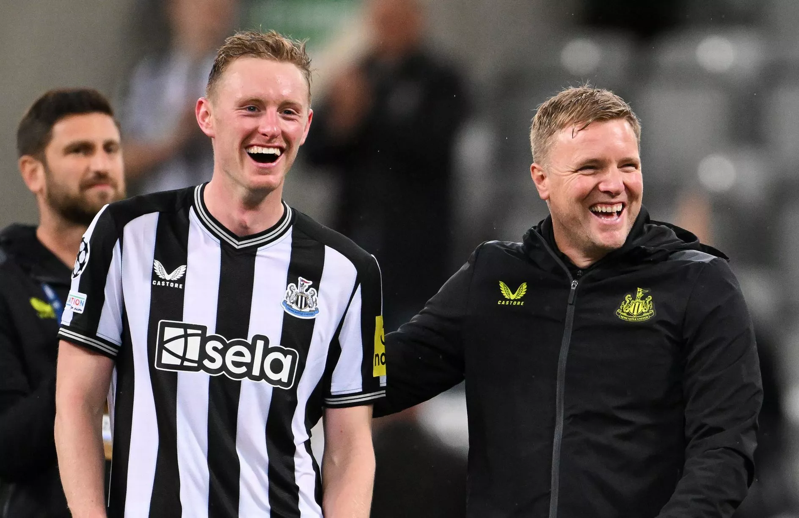
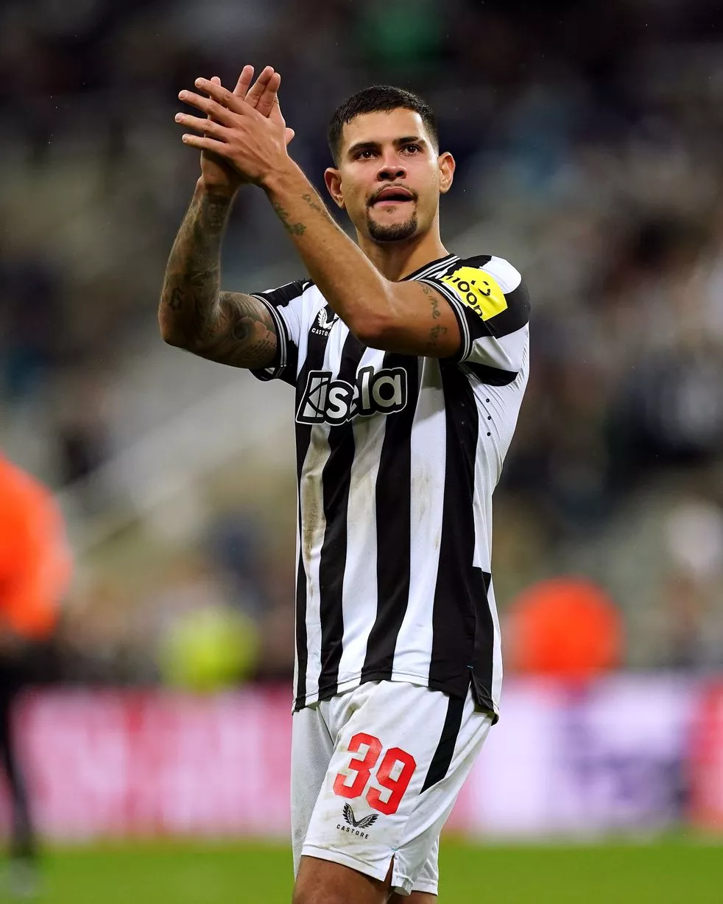
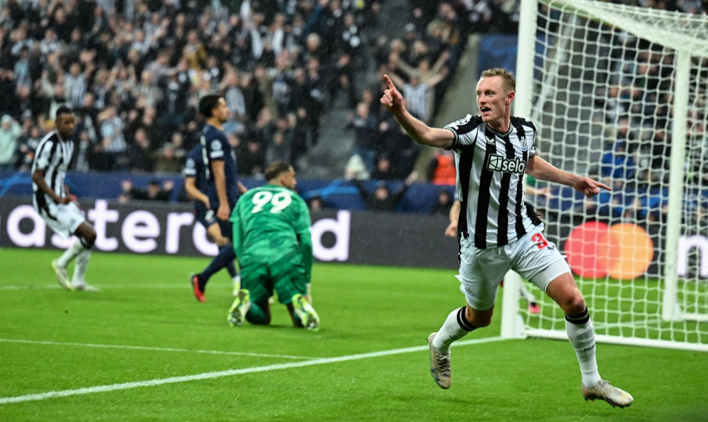
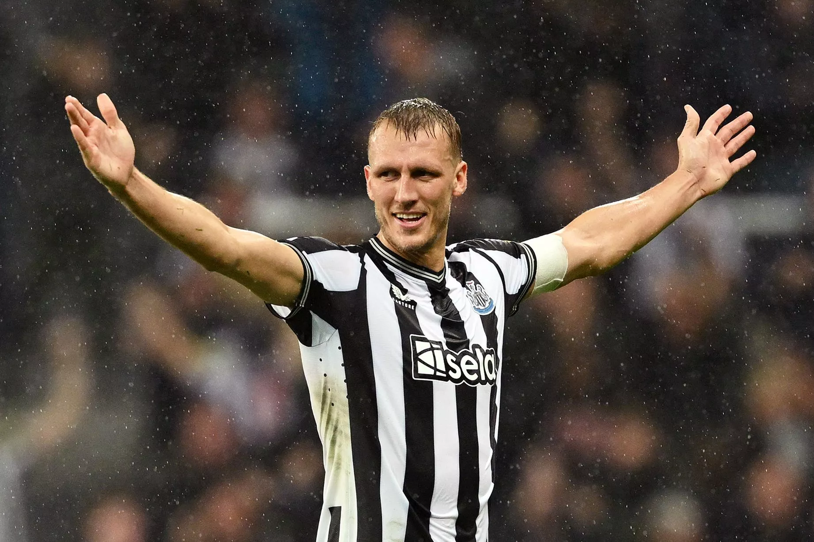
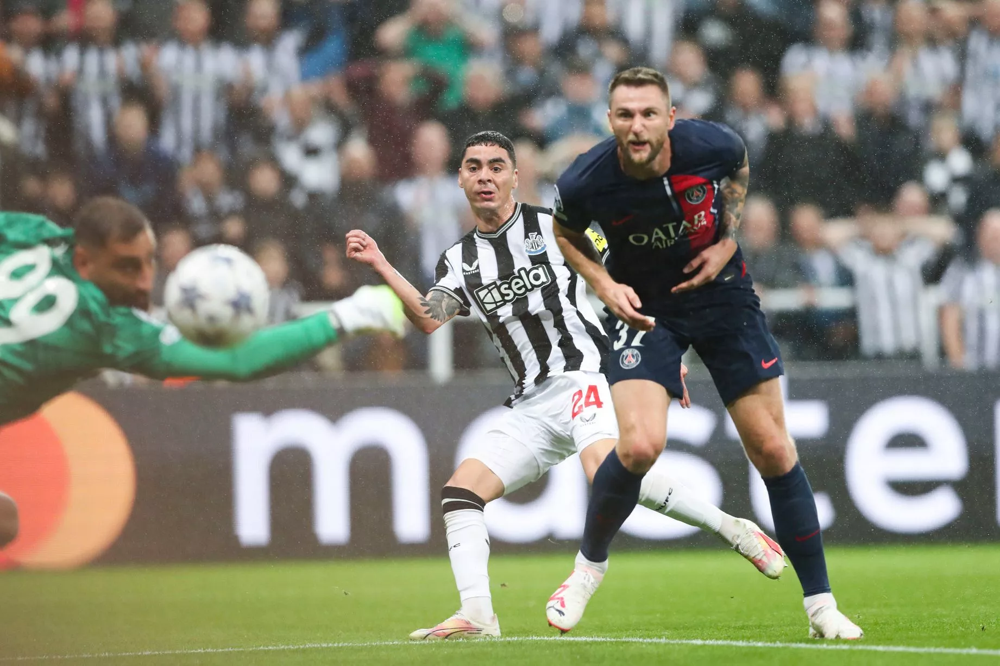
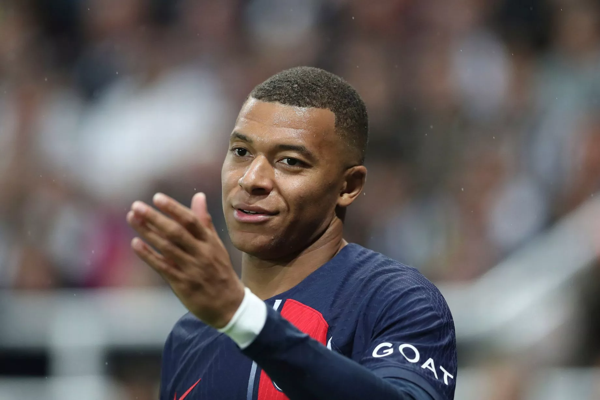
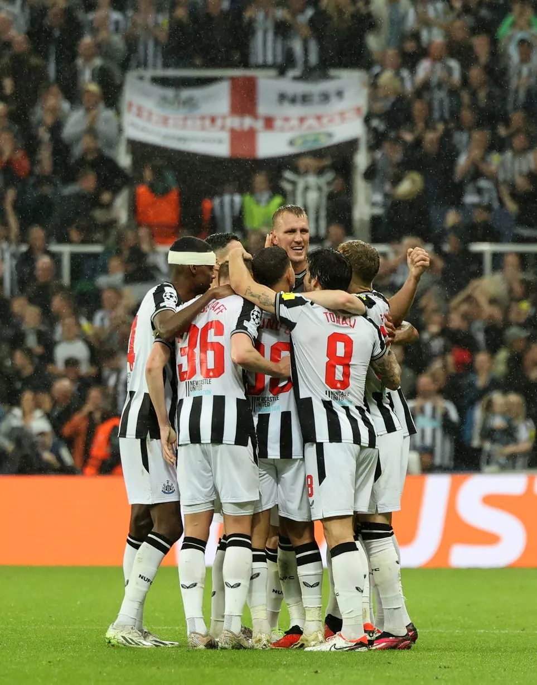
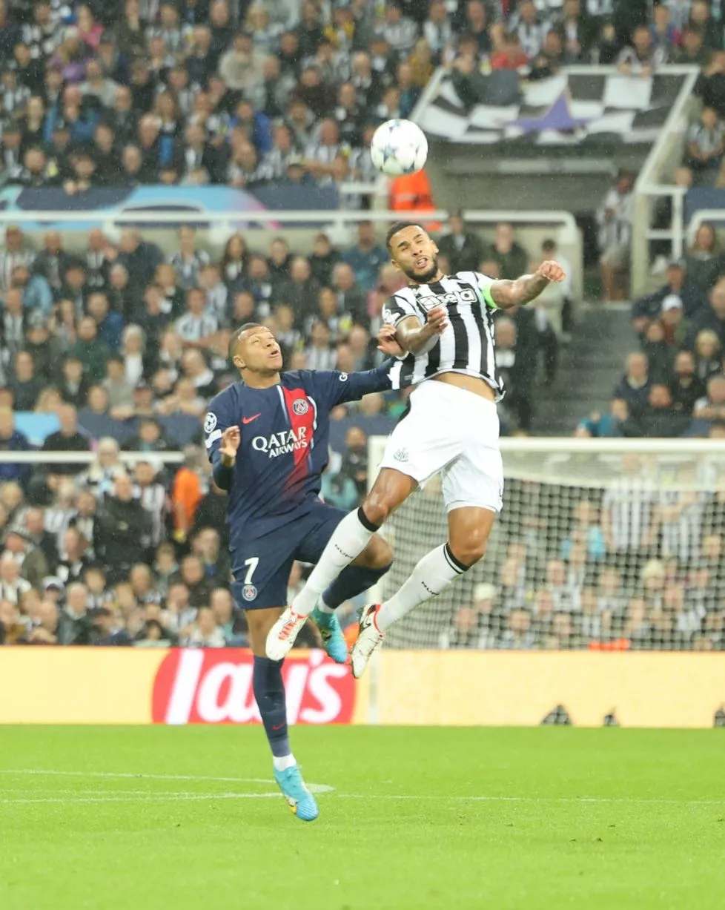
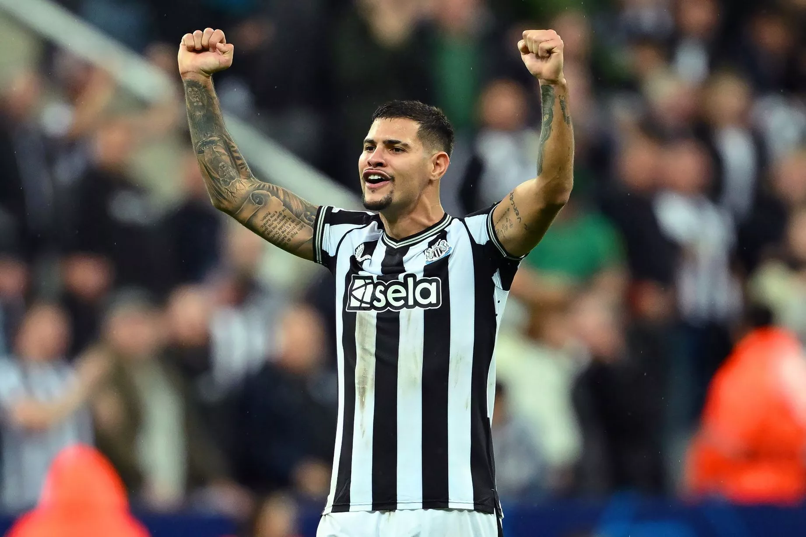
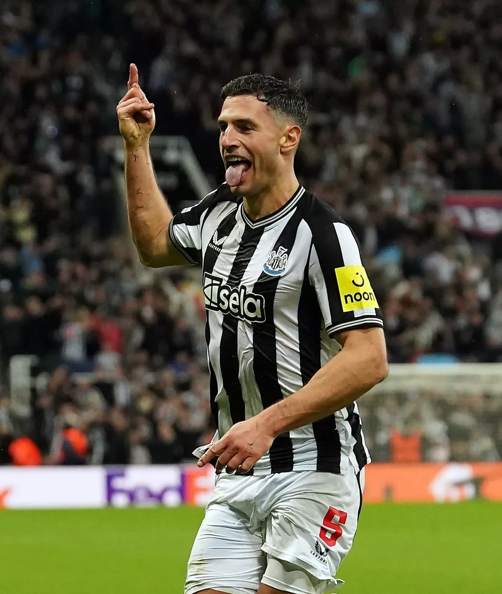
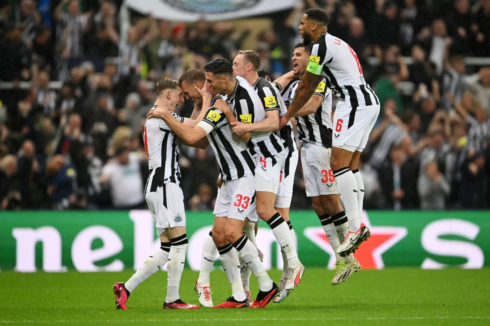
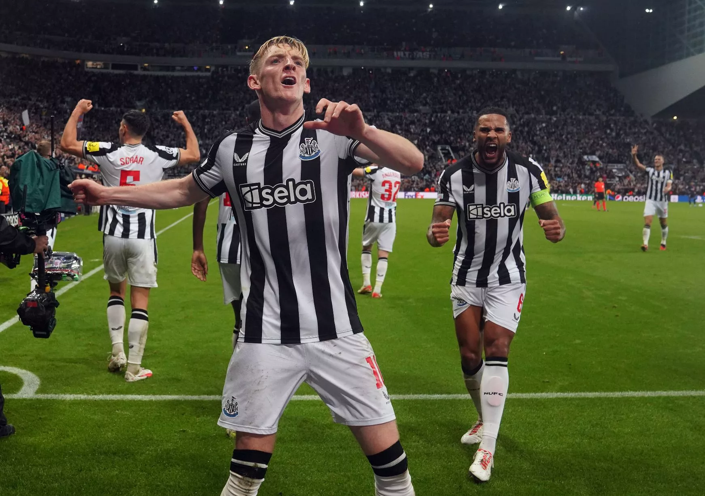
The Toon Army had already transformed St James' Park into four walls
of black and white even before Miguel Almiron sent them wild by giving
them a 17th-minute lead after PSG keeper Gianluigi Donnarumma could
only palm out Alexander Isak's shot, as Marquinhos was punished for
carelessly conceding possession. It was to prove an eventful night for
Italy keeper Donnarumma, who tried in vain to claw out Dan Burn's
towering header six minutes before half-time. The ball had already
crossed the line but Newcastle still had to wait for a video assistant
referee check for offside before the celebrations could begin.
Donnarumma was a central figure again as Newcastle went three up five
minutes after the break, the goalkeeper's poor attempt at a block
allowing Sean Longstaff's powerful shot from an angle to creep in.
PSG's threats were rare but they did pull one back after 56 minutes
through Lucas Hernandez's header - but this was Newcastle's night from
start to finish. Swiss centre-back Fabian Schar added the icing on the
cake in stoppage time as he curled a stunning shot past Donnarumma
from the edge of the box into the top corner to make it 4-1. The three
points, added to an opening draw away to AC Milan, mean Newcastle go
top of Group F.